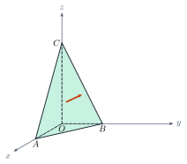

Equations of PlanesPhương trình mặt phẳng
Grade 12 · Topic: Coordinate Geometry in SpaceLớp 12 · Chủ đề: Phương pháp tọa độ trong không gian
1Lesson IntroductionGiới thiệu bài học
Learning goalsMục tiêu bài học
By the end of this lesson you can:
Sau bài học này, em có thể:
recognise a normal vector and a pair of direction vectors; find a normal vector with the cross product;
nhận biết vectơ pháp tuyến, cặp vectơ chỉ phương; tìm vectơ pháp tuyến bằng tích có hướng;
write the equation of a plane (point + normal, three points, intercepts);
viết phương trình tổng quát của mặt phẳng (qua điểm và có pháp tuyến, qua ba điểm, phương trình theo đoạn chắn);
decide when two planes are parallel or perpendicular;
xét hai mặt phẳng song song, vuông góc;
compute the distance from a point to a plane in real situations.
tính khoảng cách từ một điểm đến mặt phẳng trong tình huống thực tế.
2Mathematical VocabularyTừ vựng Toán học
normal vector – a non-zero vector whose direction is perpendicular to the plane.
vectơ pháp tuyến – vectơ khác \(\vec 0\) có giá vuông góc với mặt phẳng.
pair of direction vectors – two non-collinear vectors parallel to (or lying in) the plane.
cặp vectơ chỉ phương – hai vectơ không cùng phương, có giá song song hoặc nằm trong mặt phẳng.
cross product – \([\vec u,\vec v]\): a vector perpendicular to both \(\vec u\) and \(\vec v\).
tích có hướng – \([\vec u,\vec v]\): vectơ vuông góc với cả \(\vec u\) và \(\vec v\).
general equation of a plane – \(Ax+By+Cz+D=0\) with \(A^2+B^2+C^2\gt0\); \(\vec n=(A;B;C)\).
phương trình tổng quát của mặt phẳng – \(Ax+By+Cz+D=0\) với \(A^2+B^2+C^2\gt0\); \(\vec n=(A;B;C)\).
intercept form – \(\dfrac xa+\dfrac yb+\dfrac zc=1\): the plane through \((a;0;0)\), \((0;b;0)\), \((0;0;c)\).
phương trình theo đoạn chắn – \(\dfrac xa+\dfrac yb+\dfrac zc=1\): mặt phẳng qua \((a;0;0)\), \((0;b;0)\), \((0;0;c)\).
distance from a point to a plane – \(d=\dfrac{|Ax_0+By_0+Cz_0+D|}{\sqrt{A^2+B^2+C^2}}\).
khoảng cách từ một điểm đến mặt phẳng – \(d=\dfrac{|Ax_0+By_0+Cz_0+D|}{\sqrt{A^2+B^2+C^2}}\).
3Useful English PhrasesCụm từ tiếng Anh thường gặp
Find a normal vector of the plane.
Tìm một vectơ pháp tuyến của mặt phẳng.
Write the equation of the plane through three points.
Viết phương trình mặt phẳng đi qua ba điểm.
The two planes are parallel.
Hai mặt phẳng song song.
Compute the distance from the point to the plane.
Tính khoảng cách từ điểm đến mặt phẳng.
Substitute the coordinates of the point.
Thay tọa độ của điểm vào phương trình.
4Prerequisite ReviewÔn tập kiến thức nền
From Bài 7–8: in \(Oxyz\), \(\overrightarrow{AB}=(x_B-x_A;y_B-y_A;z_B-z_A)\), \(\vec u\cdot\vec v=xx'+yy'+zz'\), \(\vec u\perp\vec v\iff\vec u\cdot\vec v=0\), \(|\vec u|=\sqrt{x^2+y^2+z^2}\). From Grade 10: a line in \(Oxy\) is \(ax+by+c=0\) with normal \((a;b)\).
Từ Bài 7–8: trong \(Oxyz\), \(\overrightarrow{AB}=(x_B-x_A;y_B-y_A;z_B-z_A)\), \(\vec u\cdot\vec v=xx'+yy'+zz'\), \(\vec u\perp\vec v\iff\vec u\cdot\vec v=0\), \(|\vec u|=\sqrt{x^2+y^2+z^2}\). Từ lớp 10: đường thẳng trong \(Oxy\) có dạng \(ax+by+c=0\) với pháp tuyến \((a;b)\).
5TheoryLý thuyết
5.1 Normal vector and direction vectorsVectơ pháp tuyến và cặp vectơ chỉ phương
DefinitionsĐịnh nghĩa
\(\vec n\ne\vec0\) is a normal vector of \((P)\) if it is perpendicular to \((P)\). Then \(k\vec n\) (\(k\ne0\)) is also a normal vector.
\(\vec n\ne\vec0\) là vectơ pháp tuyến của \((P)\) nếu giá của \(\vec n\) vuông góc với \((P)\). Khi đó \(k\vec n\) (\(k\ne0\)) cũng là vectơ pháp tuyến.
Two non-collinear vectors \(\vec u\), \(\vec v\) parallel to (or in) \((P)\) form a pair of direction vectors.
Hai vectơ không cùng phương \(\vec u\), \(\vec v\) có giá song song hoặc nằm trong \((P)\) là một cặp vectơ chỉ phương của \((P)\).
Cross productTích có hướng
For \(\vec u=(x;y;z)\), \(\vec v=(x';y';z')\) not collinear, \(\vec n=[\vec u,\vec v]\) is perpendicular to both, so it is a normal vector of the plane with direction vectors \(\vec u\), \(\vec v\).
Với \(\vec u=(x;y;z)\), \(\vec v=(x';y';z')\) không cùng phương, \(\vec n=[\vec u,\vec v]\) vuông góc với cả hai nên là vectơ pháp tuyến của mặt phẳng nhận \(\vec u\), \(\vec v\) làm cặp vectơ chỉ phương.
5.2 Equation of a planePhương trình tổng quát của mặt phẳng
FormsCác dạng
General: \(Ax+By+Cz+D=0\) (\(A^2+B^2+C^2\gt0\)), normal vector \(\vec n=(A;B;C)\).
Tổng quát: \(Ax+By+Cz+D=0\) (\(A^2+B^2+C^2\gt0\)), vectơ pháp tuyến \(\vec n=(A;B;C)\).
Through \(M_0(x_0;y_0;z_0)\) with normal \(\vec n=(A;B;C)\): \(A(x-x_0)+B(y-y_0)+C(z-z_0)=0\).
Qua \(M_0(x_0;y_0;z_0)\), có vectơ pháp tuyến \(\vec n=(A;B;C)\): \(A(x-x_0)+B(y-y_0)+C(z-z_0)=0\).
Through three non-collinear points \(A,B,C\): \(\vec n=[\overrightarrow{AB},\overrightarrow{AC}]\), then use the point \(A\).
Qua ba điểm không thẳng hàng \(A,B,C\): \(\vec n=[\overrightarrow{AB},\overrightarrow{AC}]\), rồi dùng điểm \(A\).
Intercept form (\(abc\ne0\)): \(\dfrac xa+\dfrac yb+\dfrac zc=1\).
Theo đoạn chắn (\(abc\ne0\)): \(\dfrac xa+\dfrac yb+\dfrac zc=1\).

5.3 Parallel and perpendicular planes; distanceĐiều kiện song song, vuông góc; khoảng cách
For \((P): A x+By+Cz+D=0\), \((P'): A'x+B'y+C'z+D'=0\)Với \((P): Ax+By+Cz+D=0\), \((P'): A'x+B'y+C'z+D'=0\)
\((P)\parallel(P')\iff\vec n'=k\vec n\) and \(D'\ne kD\). If also \(D'=kD\), the planes coincide.
\((P)\parallel(P')\iff\vec n'=k\vec n\) và \(D'\ne kD\). Nếu thêm \(D'=kD\) thì hai mặt phẳng trùng nhau.
\((P)\perp(P')\iff\vec n\cdot\vec n'=0\iff AA'+BB'+CC'=0\).
\((P)\perp(P')\iff\vec n\cdot\vec n'=0\iff AA'+BB'+CC'=0\).
Distance: \(d(M_0,(P))=\dfrac{|Ax_0+By_0+Cz_0+D|}{\sqrt{A^2+B^2+C^2}}\). For parallel planes take any point of one plane.
Khoảng cách: \(d(M_0,(P))=\dfrac{|Ax_0+By_0+Cz_0+D|}{\sqrt{A^2+B^2+C^2}}\). Với hai mặt phẳng song song, lấy một điểm bất kì trên mặt phẳng này.
Watch out!Lưu ý
The normal vector is \((A;B;C)\), not \((A;B;D)\). A missing variable means a zero coefficient: \(y-2z=0\) has \(\vec n=(0;1;-2)\) and passes through \(O\).
Vectơ pháp tuyến là \((A;B;C)\), không phải \((A;B;D)\). Thiếu biến nào thì hệ số đó bằng 0: \(y-2z=0\) có \(\vec n=(0;1;-2)\) và đi qua \(O\).
6Worked ExamplesVí dụ có lời giải
ExampleVí dụ 1BasicCơ bản – Read the equationĐọc phương trình
\((P): 2x-y+3z-5=0\). Give two normal vectors of \((P)\). Does \(M(1;0;1)\) lie on \((P)\)? Does \(N(0;1;2)\)?
Cho \((P): 2x-y+3z-5=0\). Chỉ ra hai vectơ pháp tuyến của \((P)\). Điểm \(M(1;0;1)\), \(N(0;1;2)\) có thuộc \((P)\) không?
Analysis: \(\vec n=(A;B;C)\); substitute the coordinates.
Phân tích: \(\vec n=(A;B;C)\); thay tọa độ điểm vào phương trình.
\(\vec n=(2;-1;3)\), and also \(-\vec n=(-2;1;-3)\).
\(\vec n=(2;-1;3)\), và cả \(-\vec n=(-2;1;-3)\).
\(M\): \(2-0+3-5=0\) ✓. \(N\): \(0-1+6-5=0\) ✓.
\(M\): \(2-0+3-5=0\) ✓. \(N\): \(0-1+6-5=0\) ✓.
Both points lie on \((P)\).
Cả hai điểm đều thuộc \((P)\).
ExampleVí dụ 2BasicCơ bản – Point and normalQua một điểm, biết pháp tuyến
Write the plane through \(M(1;-2;3)\) with normal vector \(\vec n=(2;1;-1)\).
Viết phương trình mặt phẳng đi qua \(M(1;-2;3)\) và có vectơ pháp tuyến \(\vec n=(2;1;-1)\).
Analysis: \(A(x-x_0)+B(y-y_0)+C(z-z_0)=0\).
Phân tích: \(A(x-x_0)+B(y-y_0)+C(z-z_0)=0\).
\(2(x-1)+1(y+2)-1(z-3)=0\).
\(2(x-1)+1(y+2)-1(z-3)=0\).
\(2x-2+y+2-z+3=0\).
\(2x-2+y+2-z+3=0\).
\(2x+y-z+3=0\).
\(2x+y-z+3=0\).
ExampleVí dụ 3IntermediateTrung bình – Through three pointsQua ba điểm
Write the plane through \(A(1;0;1)\), \(B(2;1;0)\), \(C(0;2;3)\).
Viết phương trình mặt phẳng \((ABC)\) với \(A(1;0;1)\), \(B(2;1;0)\), \(C(0;2;3)\).
Analysis: \(\vec n=[\overrightarrow{AB},\overrightarrow{AC}]\).
Phân tích: \(\vec n=[\overrightarrow{AB},\overrightarrow{AC}]\).
\(\overrightarrow{AB}=(1;1;-1)\), \(\overrightarrow{AC}=(-1;2;2)\).
\(\overrightarrow{AB}=(1;1;-1)\), \(\overrightarrow{AC}=(-1;2;2)\).
\(\vec n=(1\cdot2-(-1)\cdot2;\ (-1)(-1)-1\cdot2;\ 1\cdot2-1\cdot(-1))=(4;-1;3)\).
\(\vec n=(1\cdot2-(-1)\cdot2;\ (-1)(-1)-1\cdot2;\ 1\cdot2-1\cdot(-1))=(4;-1;3)\).
\(4(x-1)-(y-0)+3(z-1)=0\). Check \(B\): \(8-1+0-7=0\); \(C\): \(0-2+9-7=0\).
\(4(x-1)-(y-0)+3(z-1)=0\). Kiểm tra \(B\): \(8-1+0-7=0\); \(C\): \(0-2+9-7=0\).
\((ABC): 4x-y+3z-7=0\).
\((ABC): 4x-y+3z-7=0\).
ExampleVí dụ 4IntermediateTrung bình – A parallel plane and its distanceMặt phẳng song song và khoảng cách
\((Q): x-2y+2z+5=0\). Write the plane \((P)\) through \(M(1;2;3)\) parallel to \((Q)\), and find the distance between \((P)\) and \((Q)\).
Cho \((Q): x-2y+2z+5=0\). Viết phương trình mặt phẳng \((P)\) qua \(M(1;2;3)\) và song song với \((Q)\); tính khoảng cách giữa \((P)\) và \((Q)\).
Analysis: \((P)\) keeps the normal vector \((1;-2;2)\).
Phân tích: \((P)\) có cùng vectơ pháp tuyến \((1;-2;2)\).
\((P): x-2y+2z+D=0\), \(1-4+6+D=0\Rightarrow D=-3\) (and \(-3\ne5\)).
\((P): x-2y+2z+D=0\), \(1-4+6+D=0\Rightarrow D=-3\) (và \(-3\ne5\)).
\(d=d(M,(Q))=\dfrac{|1-4+6+5|}{\sqrt{1+4+4}}=\dfrac83\).
\(d=d(M,(Q))=\dfrac{|1-4+6+5|}{\sqrt{1+4+4}}=\dfrac83\).
\((P): x-2y+2z-3=0\); distance \(\dfrac83\).
\((P): x-2y+2z-3=0\); khoảng cách \(\dfrac83\).
ExampleVí dụ 5AdvancedNâng cao – A lamp under a sloping roofĐèn dưới mái dốc
In a room (unit: metre), a sloping roof passes through \(A(0;0;3)\), \(B(6;0;5)\), \(C(0;8;3)\). A lamp hangs at \(L(3;4;1)\). Find the equation of the roof plane and the distance from the lamp to the roof.
Trong một căn phòng (đơn vị mét), mái dốc đi qua \(A(0;0;3)\), \(B(6;0;5)\), \(C(0;8;3)\). Một chiếc đèn treo tại \(L(3;4;1)\). Viết phương trình mặt phẳng mái và tính khoảng cách từ đèn đến mái.
Analysis: Normal \(=[\overrightarrow{AB},\overrightarrow{AC}]\), then the distance formula.
Phân tích: Pháp tuyến \(=[\overrightarrow{AB},\overrightarrow{AC}]\), rồi dùng công thức khoảng cách.
\(\overrightarrow{AB}=(6;0;2)\), \(\overrightarrow{AC}=(0;8;0)\), \([\overrightarrow{AB},\overrightarrow{AC}]=(-16;0;48)=-16(1;0;-3)\).
\(\overrightarrow{AB}=(6;0;2)\), \(\overrightarrow{AC}=(0;8;0)\), \([\overrightarrow{AB},\overrightarrow{AC}]=(-16;0;48)=-16(1;0;-3)\).
Roof: \(1(x-0)-3(z-3)=0\iff x-3z+9=0\).
Mái: \(1(x-0)-3(z-3)=0\iff x-3z+9=0\).
\(d=\dfrac{|3-3+9|}{\sqrt{1+9}}=\dfrac{9}{\sqrt{10}}\approx2.85\).
\(d=\dfrac{|3-3+9|}{\sqrt{1+9}}=\dfrac{9}{\sqrt{10}}\approx2{,}85\).
\(x-3z+9=0\); about 2.85 m (the roof does not depend on \(y\): it slopes only in the \(x\)-direction).
\(x-3z+9=0\); khoảng 2,85 m (phương trình mái không chứa \(y\): mái chỉ dốc theo hướng \(Ox\)).
7PracticeBài tập luyện tập
A. Multiple ChoiceA. Trắc nghiệm nhiều lựa chọn
The plane through \(M(1;\,2;\,-1)\) with normal vector \(\vec n=(3;\,-1;\,2)\) is…
Mặt phẳng qua \(M(1;\,2;\,-1)\), có vectơ pháp tuyến \(\vec n=(3;\,-1;\,2)\) có phương trình…
Answer: c. \(3(x-1)-1(y-2)+2(z+1)=0\).
Đáp án c. \(3(x-1)-1(y-2)+2(z+1)=0\).
A solar panel is a flat plate through the corners \(A(1;\,0;\,0)\), \(B(0;\,2;\,0)\), \(C(0;\,0;\,2)\). The equation of its plane is…
Một tấm pin mặt trời phẳng đi qua ba góc \(A(1;\,0;\,0)\), \(B(0;\,2;\,0)\), \(C(0;\,0;\,2)\). Phương trình mặt phẳng chứa tấm pin là…
Answer: a. \(\vec n=[\overrightarrow{AB},\overrightarrow{AC}]\) gives \((2;\,1;\,1)\) (simplified).
Đáp án a. \(\vec n=[\overrightarrow{AB},\overrightarrow{AC}]\) cho \((2;\,1;\,1)\) (đã rút gọn).
The distance from \(M(1;\,1;\,1)\) to the plane \(x+2y+2z+1=0\) is…
Khoảng cách từ \(M(1;\,1;\,1)\) đến mặt phẳng \(x+2y+2z+1=0\) bằng…
Answer: c. \(\dfrac{|6|}{\sqrt{9}}=2\).
Đáp án c. \(\dfrac{|6|}{\sqrt{9}}=2\).
B. True or FalseB. Đúng hoặc sai
\((P): x-2y+3z+4=0\) and \((Q): 2x-4y+6z+1=0\) are parallel.
Hai mặt phẳng \((P): x-2y+3z+4=0\) và \((Q): 2x-4y+6z+1=0\) song song.
\(\vec n_Q=2\vec n_P\)? yes, and \(D_Q\ne kD_P\).
\(\vec n_Q=2\vec n_P\)? có, và \(D_Q\ne kD_P\).
A wall \((P): x+y-3=0\) and a floor \((Q): z=0\) are perpendicular.
Bức tường \((P): x+y-3=0\) và mặt sàn \((Q): z=0\) vuông góc với nhau.
\(\vec n_P\cdot\vec n_Q=0\).
\(\vec n_P\cdot\vec n_Q=0\).
C. Short AnswerC. Trả lời ngắn
\((P): 2x-y+3z-1=0\), \((Q): mx+4y+2z+4=0\). Find \(m\) so that \((P)\perp(Q)\).
Cho \((P): 2x-y+3z-1=0\), \((Q): mx+4y+2z+4=0\). Tìm \(m\) để \((P)\perp(Q)\).
Enter a number.
Nhập một số.
\(2m+2=0\Rightarrow m=-1\).
\(2m+2=0\Rightarrow m=-1\).
Two parallel shelves lie in the planes \(2x+y+2z+5=0\) and \(2x+y+2z-7=0\) (unit: dm). Find the distance between them.
Hai tấm kệ song song nằm trên hai mặt phẳng \(2x+y+2z+5=0\) và \(2x+y+2z-7=0\) (đơn vị dm). Tính khoảng cách giữa hai tấm kệ.
Enter a number.
Nhập một số.
\(d=\dfrac{|5-(-7)|}{\sqrt{9}}=4\).
\(d=\dfrac{|5-(-7)|}{\sqrt{9}}=4\).
A. Multiple ChoiceA. Trắc nghiệm nhiều lựa chọn
The plane through \(M(0;\,-3;\,2)\) with normal vector \(\vec n=(1;\,4;\,-2)\) is…
Mặt phẳng qua \(M(0;\,-3;\,2)\), có vectơ pháp tuyến \(\vec n=(1;\,4;\,-2)\) có phương trình…
Answer: d. \(1(x+0)+4(y+3)-2(z-2)=0\).
Đáp án d. \(1(x+0)+4(y+3)-2(z-2)=0\).
A solar panel is a flat plate through the corners \(A(2;\,1;\,0)\), \(B(0;\,3;\,1)\), \(C(1;\,0;\,2)\). The equation of its plane is…
Một tấm pin mặt trời phẳng đi qua ba góc \(A(2;\,1;\,0)\), \(B(0;\,3;\,1)\), \(C(1;\,0;\,2)\). Phương trình mặt phẳng chứa tấm pin là…
Answer: d. \(\vec n=[\overrightarrow{AB},\overrightarrow{AC}]\) gives \((5;\,3;\,4)\) (simplified).
Đáp án d. \(\vec n=[\overrightarrow{AB},\overrightarrow{AC}]\) cho \((5;\,3;\,4)\) (đã rút gọn).
The distance from \(M(0;\,1;\,-1)\) to the plane \(2x+3y+6z-18=0\) is…
Khoảng cách từ \(M(0;\,1;\,-1)\) đến mặt phẳng \(2x+3y+6z-18=0\) bằng…
Answer: c. \(\dfrac{|-21|}{\sqrt{49}}=3\).
Đáp án c. \(\dfrac{|-21|}{\sqrt{49}}=3\).
B. True or FalseB. Đúng hoặc sai
\((P): x+y-z+2=0\) and \((Q): -3x-3y+3z-6=0\) are parallel.
Hai mặt phẳng \((P): x+y-z+2=0\) và \((Q): -3x-3y+3z-6=0\) song song.
\(\vec n_Q=-3\vec n_P\)? yes, but \(D_Q=kD_P\): the planes coincide.
\(\vec n_Q=-3\vec n_P\)? có, nhưng \(D_Q=kD_P\): hai mặt phẳng trùng nhau.
A wall \((P): 2x-y+z=0\) and a floor \((Q): x+2y+z+5=0\) are perpendicular.
Bức tường \((P): 2x-y+z=0\) và mặt sàn \((Q): x+2y+z+5=0\) vuông góc với nhau.
\(\vec n_P\cdot\vec n_Q=1\).
\(\vec n_P\cdot\vec n_Q=1\).
C. Short AnswerC. Trả lời ngắn
\((P): 3x+2y-z-1=0\), \((Q): mx+y+5z+4=0\). Find \(m\) so that \((P)\perp(Q)\).
Cho \((P): 3x+2y-z-1=0\), \((Q): mx+y+5z+4=0\). Tìm \(m\) để \((P)\perp(Q)\).
Enter a number.
Nhập một số.
\(3m-3=0\Rightarrow m=1\).
\(3m-3=0\Rightarrow m=1\).
Two parallel shelves lie in the planes \(x+2y+2z+4=0\) and \(x+2y+2z-5=0\) (unit: dm). Find the distance between them.
Hai tấm kệ song song nằm trên hai mặt phẳng \(x+2y+2z+4=0\) và \(x+2y+2z-5=0\) (đơn vị dm). Tính khoảng cách giữa hai tấm kệ.
Enter a number.
Nhập một số.
\(d=\dfrac{|4-(-5)|}{\sqrt{9}}=3\).
\(d=\dfrac{|4-(-5)|}{\sqrt{9}}=3\).
A. Multiple ChoiceA. Trắc nghiệm nhiều lựa chọn
The plane through \(M(2;\,-1;\,4)\) with normal vector \(\vec n=(-2;\,5;\,1)\) is…
Mặt phẳng qua \(M(2;\,-1;\,4)\), có vectơ pháp tuyến \(\vec n=(-2;\,5;\,1)\) có phương trình…
Answer: d. \(-2(x-2)+5(y+1)+1(z-4)=0\).
Đáp án d. \(-2(x-2)+5(y+1)+1(z-4)=0\).
A solar panel is a flat plate through the corners \(A(1;\,1;\,1)\), \(B(3;\,2;\,0)\), \(C(0;\,2;\,3)\). The equation of its plane is…
Một tấm pin mặt trời phẳng đi qua ba góc \(A(1;\,1;\,1)\), \(B(3;\,2;\,0)\), \(C(0;\,2;\,3)\). Phương trình mặt phẳng chứa tấm pin là…
Answer: d. \(\vec n=[\overrightarrow{AB},\overrightarrow{AC}]\) gives \((1;\,-1;\,1)\) (simplified).
Đáp án d. \(\vec n=[\overrightarrow{AB},\overrightarrow{AC}]\) cho \((1;\,-1;\,1)\) (đã rút gọn).
The distance from \(M(2;\,-1;\,0)\) to the plane \(6x+2y+3z+11=0\) is…
Khoảng cách từ \(M(2;\,-1;\,0)\) đến mặt phẳng \(6x+2y+3z+11=0\) bằng…
Answer: c. \(\dfrac{|21|}{\sqrt{49}}=3\).
Đáp án c. \(\dfrac{|21|}{\sqrt{49}}=3\).
B. True or FalseB. Đúng hoặc sai
\((P): x-y+2z+3=0\) and \((Q): 2x-y+4z+1=0\) are parallel.
Hai mặt phẳng \((P): x-y+2z+3=0\) và \((Q): 2x-y+4z+1=0\) song song.
\(\vec n_Q=\,k\vec n_P\)? no.
\(\vec n_Q=\,k\vec n_P\)? không.
A wall \((P): x+2z-4=0\) and a floor \((Q): 2x+3y-z=0\) are perpendicular.
Bức tường \((P): x+2z-4=0\) và mặt sàn \((Q): 2x+3y-z=0\) vuông góc với nhau.
\(\vec n_P\cdot\vec n_Q=0\).
\(\vec n_P\cdot\vec n_Q=0\).
C. Short AnswerC. Trả lời ngắn
\((P): x-2y+2z-1=0\), \((Q): mx+3y+4z+4=0\). Find \(m\) so that \((P)\perp(Q)\).
Cho \((P): x-2y+2z-1=0\), \((Q): mx+3y+4z+4=0\). Tìm \(m\) để \((P)\perp(Q)\).
Enter a number.
Nhập một số.
\(1m+2=0\Rightarrow m=-2\).
\(1m+2=0\Rightarrow m=-2\).
Two parallel shelves lie in the planes \(4x+4y+2z+9=0\) and \(4x+4y+2z-6=0\) (unit: dm). Find the distance between them.
Hai tấm kệ song song nằm trên hai mặt phẳng \(4x+4y+2z+9=0\) và \(4x+4y+2z-6=0\) (đơn vị dm). Tính khoảng cách giữa hai tấm kệ.
Enter a number.
Nhập một số.
\(d=\dfrac{|9-(-6)|}{\sqrt{36}}=\dfrac{5}{2}\).
\(d=\dfrac{|9-(-6)|}{\sqrt{36}}=\dfrac{5}{2}\).
D. Self-practice: Multiple ChoiceD. Tự luyện: trắc nghiệm
The plane through \(M(4;\,-3;\,0)\) with normal vector \(\vec n=(-1;\,4;\,1)\) is…
Mặt phẳng đi qua \(M(4;\,-3;\,0)\) và có vectơ pháp tuyến \(\vec n=(-1;\,4;\,1)\) có phương trình…
Answer: a. \(-1(x-4)+4(y+3)+1(z+0)=0\iff -x+4y+z+16=0\).
Đáp án a. \(-1(x-4)+4(y+3)+1(z+0)=0\iff -x+4y+z+16=0\).
A normal vector of the plane \(-x+y+3z-5=0\) is…
Một vectơ pháp tuyến của mặt phẳng \(-x+y+3z-5=0\) là…
Answer: c. \(\vec n=(A;B;C)=(-1;\,1;\,3)\); any non-zero multiple, e.g. \((1;\,-1;\,-3)\), is also a normal vector.
Đáp án c. \(\vec n=(A;B;C)=(-1;\,1;\,3)\); mọi vectơ \(k\vec n\) (\(k\ne0\)), ví dụ \((1;\,-1;\,-3)\), cũng là vectơ pháp tuyến.
\(\vec u=(3;\,4;\,1)\), \(\vec v=(-1;\,3;\,1)\). The vector \([\vec u,\vec v]\) is…
Cho \(\vec u=(3;\,4;\,1)\), \(\vec v=(-1;\,3;\,1)\). Tích có hướng \([\vec u,\vec v]\) là…
Answer: a. \([\vec u,\vec v]=\left(\begin{vmatrix}4&1\\3&1\end{vmatrix};\begin{vmatrix}1&3\\1&-1\end{vmatrix};\begin{vmatrix}3&4\\-1&3\end{vmatrix}\right)=(1;\,-4;\,13)\).
Đáp án a. \([\vec u,\vec v]=\left(\begin{vmatrix}4&1\\3&1\end{vmatrix};\begin{vmatrix}1&3\\1&-1\end{vmatrix};\begin{vmatrix}3&4\\-1&3\end{vmatrix}\right)=(1;\,-4;\,13)\).
The plane through \(A(-2;0;0)\), \(B(0;2;0)\), \(C(0;0;1)\) is…
Mặt phẳng đi qua \(A(-2;0;0)\), \(B(0;2;0)\), \(C(0;0;1)\) có phương trình…
Answer: a. Intercept form: \(\dfrac xa+\dfrac yb+\dfrac zc=1\), i.e. \(x-y-2z+2=0\).
Đáp án a. Phương trình theo đoạn chắn: \(\dfrac xa+\dfrac yb+\dfrac zc=1\), tức \(x-y-2z+2=0\).
The distance from \(M(3;\,3;\,0)\) to the plane \(x-4y-8z+45=0\) is…
Khoảng cách từ \(M(3;\,3;\,0)\) đến mặt phẳng \(x-4y-8z+45=0\) bằng…
Answer: a. \(d=\dfrac{|36|}{\sqrt{81}}=\dfrac{36}{9}=4\).
Đáp án a. \(d=\dfrac{|36|}{\sqrt{81}}=\dfrac{36}{9}=4\).
\((P): x+2y+z+1=0\) and \((Q): 2x+my+2z+5=0\). \((P)\parallel(Q)\) when \(m=\)…
Cho \((P): x+2y+z+1=0\) và \((Q): 2x+my+2z+5=0\). \((P)\parallel(Q)\) khi \(m=\)…
Answer: d. The normal vectors must be proportional with ratio \(2\): \(m=2\cdot2=4\) (and \(5\ne2\cdot1\)).
Đáp án d. Hai vectơ pháp tuyến phải cùng phương với tỉ số \(2\): \(m=2\cdot2=4\) (và \(5\ne2\cdot1\)).
\((P): x+2y+z-2=0\), \((Q): mx-y-3z-1=0\). \((P)\perp(Q)\) when \(m=\)…
Cho \((P): x+2y+z-2=0\), \((Q): mx-y-3z-1=0\). \((P)\perp(Q)\) khi \(m=\)…
Answer: a. \(\vec n_1\cdot\vec n_2=1m-5=0\Rightarrow m=5\).
Đáp án a. \(\vec n_1\cdot\vec n_2=1m-5=0\Rightarrow m=5\).
Which point lies on the plane \(3x-2y+3z+4=0\)?
Điểm nào thuộc mặt phẳng \(3x-2y+3z+4=0\)?
Answer: c. Substitute: \(3\cdot1-2\cdot-1+3\cdot-3+4=0\).
Đáp án c. Thay tọa độ: \(3\cdot1-2\cdot-1+3\cdot-3+4=0\).
D. Self-practice: Multiple ChoiceD. Tự luyện: trắc nghiệm
The plane through \(M(0;\,0;\,3)\) with normal vector \(\vec n=(2;\,3;\,2)\) is…
Mặt phẳng đi qua \(M(0;\,0;\,3)\) và có vectơ pháp tuyến \(\vec n=(2;\,3;\,2)\) có phương trình…
Answer: d. \(2(x+0)+3(y+0)+2(z-3)=0\iff 2x+3y+2z-6=0\).
Đáp án d. \(2(x+0)+3(y+0)+2(z-3)=0\iff 2x+3y+2z-6=0\).
A normal vector of the plane \(3x-4y+4z-1=0\) is…
Một vectơ pháp tuyến của mặt phẳng \(3x-4y+4z-1=0\) là…
Answer: b. \(\vec n=(A;B;C)=(3;\,-4;\,4)\); any non-zero multiple, e.g. \((6;\,-8;\,8)\), is also a normal vector.
Đáp án b. \(\vec n=(A;B;C)=(3;\,-4;\,4)\); mọi vectơ \(k\vec n\) (\(k\ne0\)), ví dụ \((6;\,-8;\,8)\), cũng là vectơ pháp tuyến.
\(\vec u=(2;\,1;\,3)\), \(\vec v=(-2;\,2;\,3)\). The vector \([\vec u,\vec v]\) is…
Cho \(\vec u=(2;\,1;\,3)\), \(\vec v=(-2;\,2;\,3)\). Tích có hướng \([\vec u,\vec v]\) là…
Answer: d. \([\vec u,\vec v]=\left(\begin{vmatrix}1&3\\2&3\end{vmatrix};\begin{vmatrix}3&2\\3&-2\end{vmatrix};\begin{vmatrix}2&1\\-2&2\end{vmatrix}\right)=(-3;\,-12;\,6)\).
Đáp án d. \([\vec u,\vec v]=\left(\begin{vmatrix}1&3\\2&3\end{vmatrix};\begin{vmatrix}3&2\\3&-2\end{vmatrix};\begin{vmatrix}2&1\\-2&2\end{vmatrix}\right)=(-3;\,-12;\,6)\).
The plane through \(A(3;0;0)\), \(B(0;-2;0)\), \(C(0;0;-2)\) is…
Mặt phẳng đi qua \(A(3;0;0)\), \(B(0;-2;0)\), \(C(0;0;-2)\) có phương trình…
Answer: b. Intercept form: \(\dfrac xa+\dfrac yb+\dfrac zc=1\), i.e. \(2x-3y-3z-6=0\).
Đáp án b. Phương trình theo đoạn chắn: \(\dfrac xa+\dfrac yb+\dfrac zc=1\), tức \(2x-3y-3z-6=0\).
The distance from \(M(1;\,-3;\,-1)\) to the plane \(2x+2y-z+9=0\) is…
Khoảng cách từ \(M(1;\,-3;\,-1)\) đến mặt phẳng \(2x+2y-z+9=0\) bằng…
Answer: d. \(d=\dfrac{|6|}{\sqrt{9}}=\dfrac{6}{3}=2\).
Đáp án d. \(d=\dfrac{|6|}{\sqrt{9}}=\dfrac{6}{3}=2\).
\((P): x-3y+4z+1=0\) and \((Q): 3x+my+12z+5=0\). \((P)\parallel(Q)\) when \(m=\)…
Cho \((P): x-3y+4z+1=0\) và \((Q): 3x+my+12z+5=0\). \((P)\parallel(Q)\) khi \(m=\)…
Answer: a. The normal vectors must be proportional with ratio \(3\): \(m=3\cdot-3=-9\) (and \(5\ne3\cdot1\)).
Đáp án a. Hai vectơ pháp tuyến phải cùng phương với tỉ số \(3\): \(m=3\cdot-3=-9\) (và \(5\ne3\cdot1\)).
\((P): x+2y-2z-2=0\), \((Q): mx-y+3z-1=0\). \((P)\perp(Q)\) when \(m=\)…
Cho \((P): x+2y-2z-2=0\), \((Q): mx-y+3z-1=0\). \((P)\perp(Q)\) khi \(m=\)…
Answer: c. \(\vec n_1\cdot\vec n_2=1m-8=0\Rightarrow m=8\).
Đáp án c. \(\vec n_1\cdot\vec n_2=1m-8=0\Rightarrow m=8\).
Which point lies on the plane \(-4x-y+2z+10=0\)?
Điểm nào thuộc mặt phẳng \(-4x-y+2z+10=0\)?
Answer: d. Substitute: \(-4\cdot3-1\cdot2+2\cdot2+10=0\).
Đáp án d. Thay tọa độ: \(-4\cdot3-1\cdot2+2\cdot2+10=0\).
D. Self-practice: Multiple ChoiceD. Tự luyện: trắc nghiệm
The plane through \(M(-2;\,1;\,3)\) with normal vector \(\vec n=(-4;\,-1;\,-1)\) is…
Mặt phẳng đi qua \(M(-2;\,1;\,3)\) và có vectơ pháp tuyến \(\vec n=(-4;\,-1;\,-1)\) có phương trình…
Answer: a. \(-4(x+2)-1(y-1)-1(z-3)=0\iff -4x-y-z-4=0\).
Đáp án a. \(-4(x+2)-1(y-1)-1(z-3)=0\iff -4x-y-z-4=0\).
A normal vector of the plane \(-3x+4z+2=0\) is…
Một vectơ pháp tuyến của mặt phẳng \(-3x+4z+2=0\) là…
Answer: d. \(\vec n=(A;B;C)=(-3;\,0;\,4)\); any non-zero multiple, e.g. \((-9;\,0;\,12)\), is also a normal vector.
Đáp án d. \(\vec n=(A;B;C)=(-3;\,0;\,4)\); mọi vectơ \(k\vec n\) (\(k\ne0\)), ví dụ \((-9;\,0;\,12)\), cũng là vectơ pháp tuyến.
\(\vec u=(2;\,-2;\,3)\), \(\vec v=(0;\,-4;\,2)\). The vector \([\vec u,\vec v]\) is…
Cho \(\vec u=(2;\,-2;\,3)\), \(\vec v=(0;\,-4;\,2)\). Tích có hướng \([\vec u,\vec v]\) là…
Answer: b. \([\vec u,\vec v]=\left(\begin{vmatrix}-2&3\\-4&2\end{vmatrix};\begin{vmatrix}3&2\\2&0\end{vmatrix};\begin{vmatrix}2&-2\\0&-4\end{vmatrix}\right)=(8;\,-4;\,-8)\).
Đáp án b. \([\vec u,\vec v]=\left(\begin{vmatrix}-2&3\\-4&2\end{vmatrix};\begin{vmatrix}3&2\\2&0\end{vmatrix};\begin{vmatrix}2&-2\\0&-4\end{vmatrix}\right)=(8;\,-4;\,-8)\).
The plane through \(A(2;0;0)\), \(B(0;2;0)\), \(C(0;0;3)\) is…
Mặt phẳng đi qua \(A(2;0;0)\), \(B(0;2;0)\), \(C(0;0;3)\) có phương trình…
Answer: c. Intercept form: \(\dfrac xa+\dfrac yb+\dfrac zc=1\), i.e. \(3x+3y+2z-6=0\).
Đáp án c. Phương trình theo đoạn chắn: \(\dfrac xa+\dfrac yb+\dfrac zc=1\), tức \(3x+3y+2z-6=0\).
The distance from \(M(0;\,-3;\,1)\) to the plane \(2x+3y-6z+36=0\) is…
Khoảng cách từ \(M(0;\,-3;\,1)\) đến mặt phẳng \(2x+3y-6z+36=0\) bằng…
Answer: c. \(d=\dfrac{|21|}{\sqrt{49}}=\dfrac{21}{7}=3\).
Đáp án c. \(d=\dfrac{|21|}{\sqrt{49}}=\dfrac{21}{7}=3\).
\((P): x+2y+4z+1=0\) and \((Q): mx+6y+12z+5=0\). \((P)\parallel(Q)\) when \(m=\)…
Cho \((P): x+2y+4z+1=0\) và \((Q): mx+6y+12z+5=0\). \((P)\parallel(Q)\) khi \(m=\)…
Answer: b. The normal vectors must be proportional with ratio \(3\): \(m=3\cdot1=3\) (and \(5\ne3\cdot1\)).
Đáp án b. Hai vectơ pháp tuyến phải cùng phương với tỉ số \(3\): \(m=3\cdot1=3\) (và \(5\ne3\cdot1\)).
\((P): 3x-y+z-2=0\), \((Q): mx+2y+2z-1=0\). \((P)\perp(Q)\) when \(m=\)…
Cho \((P): 3x-y+z-2=0\), \((Q): mx+2y+2z-1=0\). \((P)\perp(Q)\) khi \(m=\)…
Answer: d. \(\vec n_1\cdot\vec n_2=3m+0=0\Rightarrow m=0\).
Đáp án d. \(\vec n_1\cdot\vec n_2=3m+0=0\Rightarrow m=0\).
Which point lies on the plane \(-4x-3y+z-8=0\)?
Điểm nào thuộc mặt phẳng \(-4x-3y+z-8=0\)?
Answer: d. Substitute: \(-4\cdot-1-3\cdot-1+1\cdot1-8=0\).
Đáp án d. Thay tọa độ: \(-4\cdot-1-3\cdot-1+1\cdot1-8=0\).
8Common MistakesLỗi thường gặp
\(\vec n=(A;B;D)\). The normal vector uses the coefficients of \(x,y,z\) only.
\(\vec n=(A;B;D)\). Vectơ pháp tuyến chỉ gồm hệ số của \(x,y,z\).
Sign errors. Through \(M(1;-2;3)\): \(A(x-1)+B(y+2)+C(z-3)=0\).
Sai dấu. Qua \(M(1;-2;3)\): \(A(x-1)+B(y+2)+C(z-3)=0\).
"Proportional normals ⇒ parallel". Also check \(D'\ne kD\); otherwise the planes coincide.
"Pháp tuyến cùng phương ⇒ song song". Còn phải kiểm tra \(D'\ne kD\); nếu không hai mặt phẳng trùng nhau.
Forgetting the absolute value or the root. \(d=\dfrac{|\dots|}{\sqrt{A^2+B^2+C^2}}\).
Quên giá trị tuyệt đối hoặc căn. \(d=\dfrac{|\dots|}{\sqrt{A^2+B^2+C^2}}\).
9Lesson SummaryTổng kết
\(Ax+By+Cz+D=0\) has \(\vec n=(A;B;C)\); through \(M_0\): \(A(x-x_0)+B(y-y_0)+C(z-z_0)=0\).
\(Ax+By+Cz+D=0\) có \(\vec n=(A;B;C)\); qua \(M_0\): \(A(x-x_0)+B(y-y_0)+C(z-z_0)=0\).
Three points: \(\vec n=[\overrightarrow{AB},\overrightarrow{AC}]\); intercepts: \(\frac xa+\frac yb+\frac zc=1\).
Ba điểm: \(\vec n=[\overrightarrow{AB},\overrightarrow{AC}]\); đoạn chắn: \(\frac xa+\frac yb+\frac zc=1\).
Parallel: \(\vec n'=k\vec n\), \(D'\ne kD\); perpendicular: \(\vec n\cdot\vec n'=0\).
Song song: \(\vec n'=k\vec n\), \(D'\ne kD\); vuông góc: \(\vec n\cdot\vec n'=0\).
\(d=\dfrac{|Ax_0+By_0+Cz_0+D|}{\sqrt{A^2+B^2+C^2}}\). Key words: normal vector, cross product, plane, distance.
\(d=\dfrac{|Ax_0+By_0+Cz_0+D|}{\sqrt{A^2+B^2+C^2}}\). Từ cần nhớ: normal vector, cross product, plane, distance.